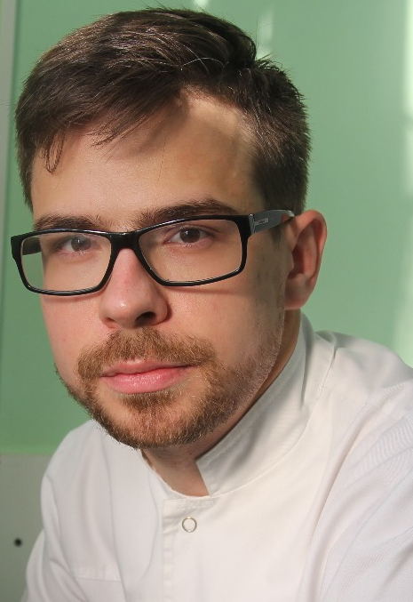

Биография
Гун Борис Александрович.

Направление профессиональной деятельности:
- -съемное протезирование (частичное и полное)
- -изготовление мостовидных протезов, одиночных коронок (цельнолитые, штампованные, металлические, металлопластмасса, металлокерамика)
- -изготовление временных ортопедических конструкций( иммедиат-протезы, пластмассовые коронки)
- -протезирование на имплантатах
- -протезирование с помощью керамических вкладок
- -протезирование пациентов с патологией височно-нижнечелюстного сустава совместно с врачом-ортодонтом и кафедрой ортопедической стоматологии МГМСУ
Обучение.
- 2013 г.
-
- Окончил Московский Государственный Медико-Стоматологический Университет им. Евдокимова, стоматологический факультет.
- 2013-2014гг.
-
- Интернатура последипломного образования на кафедре «Ортопедическая стоматология» МГМСУ на базе Клинико-Диагностического центра.
- 2014-2016 г.
-
- Ординатура последипломного образования на кафедре «Ортопедическая стоматология» МГМСУ на базе Клинико-Диагностического центра.
- 2016 г.
-
- Российская медицинская академия последипломного образования, профессиональная переподготовка по специальности «Ортопедическая стоматология».
Дополнительное образование.
Участник семинаров:
- 2015 г.
-
- «Неотложная помощь в стоматологии» Дентал-Экспо
- «Курс по эндодонтии «ENDOfeature» К.Шеуджен
- «Повышение прибыльности стоматологической клиники» В.В.Акимов
- «Основные аспекты в составлении комплексного стоматологического плана лечения» Рами Балабановский (Израиль)
- «Имплантация от А до Я. Протезирование на имплантатах» Ассоциация молодых стоматологов
- «Обучение по работе с программами vatech Ez3Dplus / Planmeca Romexis Viewer по просмотру 3D снимков» Пикассо.
- 2016 г.
-
- «Психология пациента, как основа успеха частной практики врача-стоматолога» Проект адаптация к жизни.
- «Протезирование на имплантатах» А.Першин
- «Виниры» А.Першин
- «Препарирование зубов для изготовления полных коронок» А.Олексик
- «Все о металлокерамике, провизорных реставрациях и оттисках» Г.Дажаев
Работа.
- 2011г.- 2013г.
-
- «Клуб 32 на Арбатской» ассистент врача -стоматолога, врач-гигиенист стоматологический
- 2012г.-2013г.
-
- «Океан здоровья» ассистент врача-стоматолога, дежурный врач-стоматолог по оказанию неотложной стоматологической помощи в ночное время.
- 2013г.-2016г.
-
- «Видент» врач-стоматолог общей практики
- 2013г.-2016г.
-
- «КДЦ МГМСУ» врач-стоматолог ортопед интерн/ординатор
- С 2016г.
-
- ГАУЗ Стоматологическая поликлиника №22, врач-стоматолог ортопед

{kind=link}
{kind=link}
{kind=link}
{kind=link}
{kind=link}
{kind=link}
{kind=link}
{kind=link}